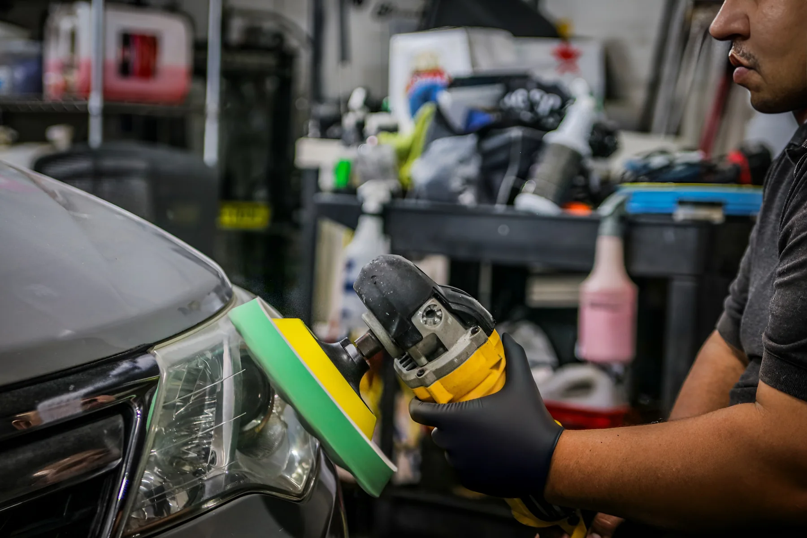
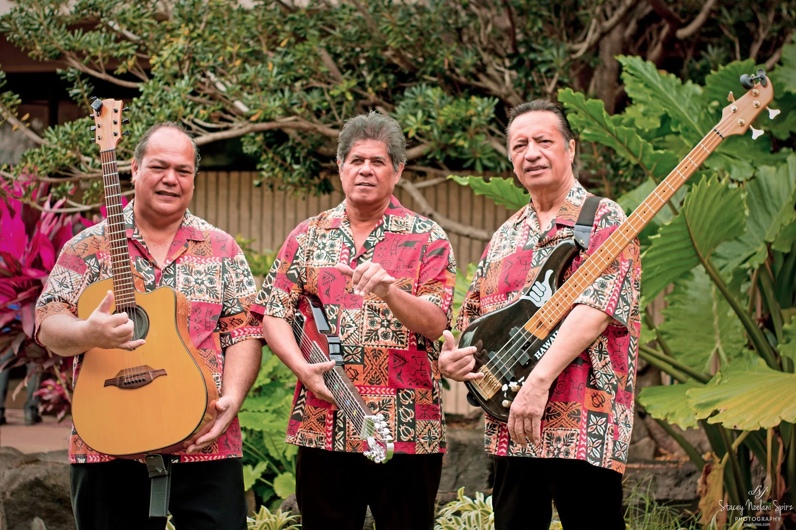
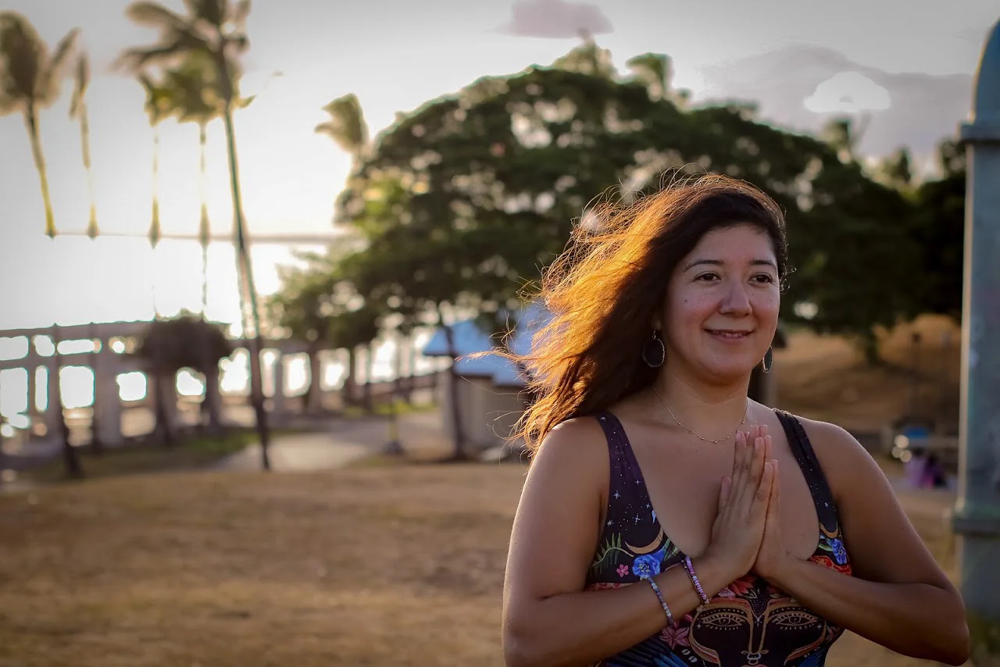

Behind the scenes
ZEOS Detailing, LLC
A candid look at hands-on automotive detailing.
Explore photographs ↗Visit ZEOS Detailing ↗A few of the faces, expressions, and shared moments I have been fortunate to photograph.
8 selected photographs
← Back to portfolio
© Stacey Noelani Spirz · For viewing only. Want to use a photograph or order a print? Please contact me.
Swipe the photographs sideways or use the arrows. Tap the large image to see it full screen.
Two special collections from my existing portfolio. Explore each series and visit the featured websites.

A candid look at hands-on automotive detailing.
Explore photographs ↗Visit ZEOS Detailing ↗
Portraits and expressive movement by the ocean.
Explore photographs ↗Visit I Am Khushi ↗